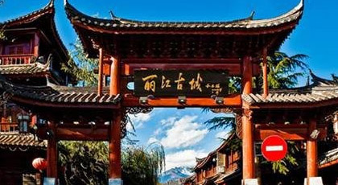
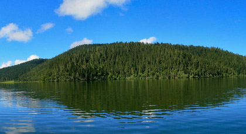

我爱旅游~
|  | 丽江 |
 |
香格里拉香格里拉市原名中甸县，藏语称"建塘"，相传与巴塘、理塘系藏王三个儿子的封地。"甸"，似为彝语，意为"坝子"、"平地"。一说中甸系纳西语，为"土地"的音译，意为"酋长住地"或"饲养牦犏牛的地方"。香格里拉，是迪庆藏语，意为"心中的日月"。1933年，詹姆斯·希尔顿在其长篇小说《失去的地平线》中，首次描绘了一个远在东方群山峻岭之中的永恒和平宁静之地"香格里拉"。 |
|  | 西藏 西藏一词是指中华人民共和国的西藏自治区，简称为西藏。西藏，以清朝中央正式定名得名。唐宋为吐蕃；元朝属宣政院；明朝称乌思藏，设都司等；清初称卫藏，卫即前藏，藏即后藏；后正式定名为西藏，为西藏得名的开始；清朝设西藏办事大臣；民国初西藏地方；中华人民共和国成立以后，1965年西藏自治区正式建立，西藏一词即成为西藏自治区的简称，单字简称为"藏"。[ |
上海 |